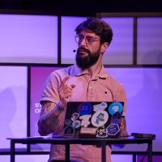

👋 JLo
I'm Jean-Loïc, but everybody calls me JLo. I have 12 years of experience in Product Management, and I am a home automation enthusiast. I am currently the Lead of Product and UX at the Open Home Foundation (Home Assistant, Music Assistant, ESPHome). Here is where you can find me online.